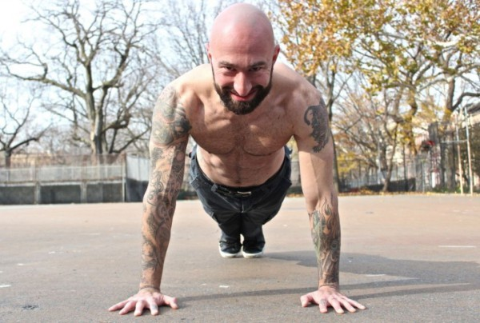
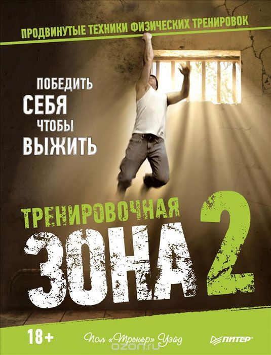
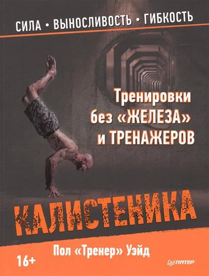
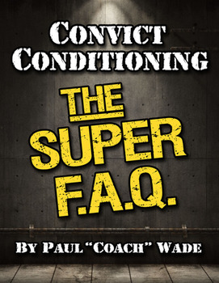
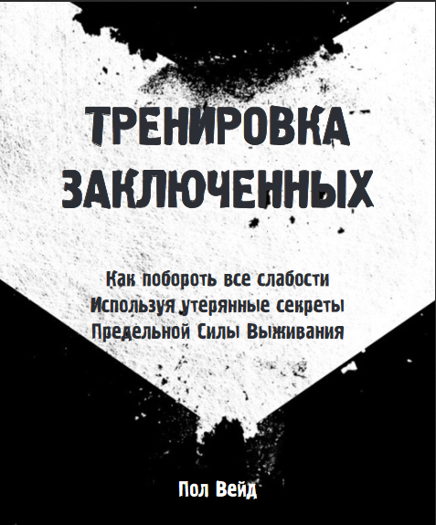
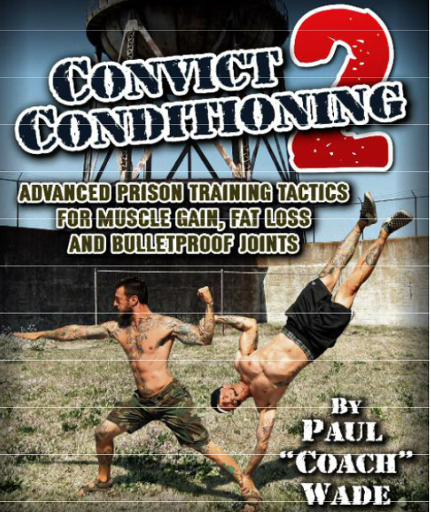

It’s about freedom. It’s about survival. It’s about humanity. It was written by a former prisoner, a man who was deprived of his freedom for more than twenty years.
A man who endured the harshest prisons in America. A man who was forced to draw on his inner strength to survive.
A man stripped of everything but his body and soul—and who decided, no matter what, to grow and find his personal freedom, which no one could take away from him.
The freedom of a strong body and a resilient spirit. Good physical condition and strength are unthinkable without health—these three components of a happy life are easily achieved through regular training.
And the most important thing in training is adhering to safety protocols, regardless of an individual’s specific characteristics and goals.
Perform all exercises carefully—after all, the responsibility for your well-being and health lies solely with you.
Be sure to consult a doctor before starting your training. Take care of yourself!

Paul Wade was first convicted in 1979 and spent nineteen years in the most notorious and brutal prisons in the United States—Angola and Marion.
When he first went behind bars at age 23—lanky, skinny, and not particularly strong by nature—Wade realized that the easiest way to avoid becoming someone’s “henchman”
was to get strong, and fast. A cellmate—a former Navy SEAL—taught Wade the basics, which helped him build a little muscle mass.
Daily workouts in his cell made him more resilient, but he stubbornly pushed for more and never stopped learning from everyone
he could find around him—gymnasts, soldiers, wrestlers, weightlifters, yogis, and even doctors. Over the years, Wade collected advanced techniques and valuable advice,
which he later incorporated into his system. Experimenting on himself, he never took a single day off and, as a result, was always in excellent physical shape. Any altercation
he got into was quickly resolved—his strength was explosive and dangerous.
During his last stint in prison, Wade was given the nickname “Entrenador,” which translates from Spanish as “coach,”
because inmates constantly approached him asking him to teach them how to train so they could become strong and resilient in a short amount of time.
That’s how he became a coach for hundreds of inmates. The experience Wade gained during this time was invaluable and allowed him to refine his system
so that it would be equally effective for different body types and metabolic rates and would not depend on a person’s fitness level.
 |
 |
 |
 |
 |